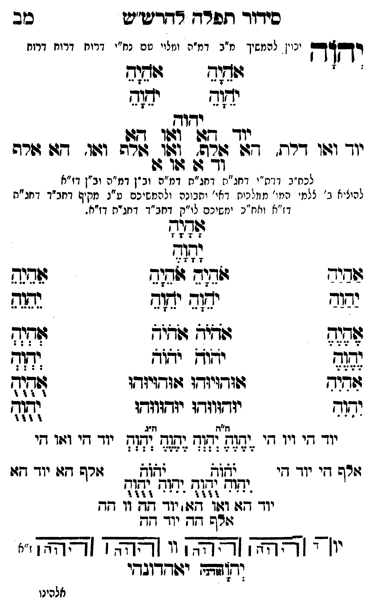

Neue Klartextfassung
יְהוָה [יכוין להמשיך מ"ב דמ"ה ומלויו עם נח"י דרוח דרוח דרוח] === טבלה === [טור ימין] אָהָיָהָ יָהָוָהָ [טור אמצעי] [טור שמאל] אָהָיָהָ יָהָוָהָ === סוף טבלה === יהוה יוד הא ואו הא יוד ואו דלת, הא אלף, ואו אלף ואו, הא אלף וד א או א [לכח"ב דדת"י דחג"ת דחג"ת דמ"ה וב"ן דמ"ה וב"ן דז"א] [להעלות ב' צלמי המו' ממלכות דאי' ותבונה ולהמשיכם ע"ג מקיף דחב"ד דחג"ת דז"א וחו"ב ימשיכם לו"ק דחב"ד דחג"ת דז"א.] === טבלה === [טור ימין] אַהַיַהַ יַהַוַהַ אֶהֶיֶהֶ יֶהֶוֶהֶ אִהִיִהִ יִהִוִהִ [טור אמצעי] אָהָיָהָ יָהָוָהָ אֹהֵיָהֵ אֹהֵיָהֵ יֹהֵוָהֵ יֹהֵוָהֵ אֹהֹיֹהֹ אֹהֹיֹהֹ יֹהֹוֹהֹ יֹהֹוֹהֹ אוּהוּיוּהוּ אוּהוּיוּהוּ יוּהוּווּהוּ יוּהוּווּהוּ [טור שמאל] אֵהֵיֵהֵ יֵהֵוֵהֵ אְהְיְהְ יְהְוְהְ אֻהֻיֻהֻ יֻהֻוֻהֻ === סוף טבלה === === טבלה === [טור ימין] יוד הי ויו הי אלף הי יוד הי [טור אמצעי] [ה"ח ה"ג] יֶהֶוֶהֶ יְהְוְהְ יֶהֶוֶהֶ יְהְוְהְ יֹהֹוֹהֹ יֹהֹוֹהֹ יִהִוִהִ יֻהֻוֻהֻ יִהִוִהִ יֻהֻוֻהֻ יוד הא ואו הא יוד הה וו הה אלף הה יוד הה [טור שמאל] יוד הי ואו הי אלף הא יוד הא === סוף טבלה === [תרשים: ארבעה צירופי יהוה בקווים אופקיים ואנכיים המחברים את האותיות. לצדי התרשים וי וי וי וי; ז"א.] יאהדונהי יהוה (אדני)
Original gegen neue OCR · Niqqud für Vergleich ausgeblendet
Original
יהוה [יכויןK088-001 להמשיך מ"ב דמ"ה ומלויו עםK088-002 נח"י דרוח דרוח דרוח] === טבלה === [טור ימין] אהיה יהוה [טור אמצעי] [טור שמאל] אהיה יהוה === סוף טבלה === יהוה יוד הא ואו הא יוד ואו דלת, הא אלף, ואו אלף ואו, הא אלף וד א או א [לכח"ב דדת"יK088-003 דחג"ת דחג"תK088-004 דמ"ה וב"ן דמ"ה וב"ן דז"א] [להעלותK088-005 ב' צלמי המו' ממלכותK088-006 דאי' ותבונהK088-007 ולהמשיכם ע"גK088-008 מקיף דחב"ד דחג"תK088-009 דז"א וחו"ב ימשיכם לו"קK088-010 דחב"ד דחג"ת דז"א.] === טבלה === [טור ימין] אהיה יהוה אהיה יהוה אהיה יהוה [טור אמצעי] אהיה יהוה אהיה אהיה יהוה יהוה אהיה אהיה יהוה יהוה אוהויוהו אוהויוהו יוהוווהו יוהוווהו [טור שמאל] אהיה יהוה אהיה יהוה אהיה יהוה === סוף טבלה === === טבלה === [טור ימין]K088-011 יוד הי ויו הי אלף היK088-012 יוד הי [טור אמצעי] [ה"ח ה"ג] יהוה יהוה יהוה יהוה יהוה יהוה יהוה יהוה יהוה יהוהK088-013 יוד הא ואו הא יוד הה וו הה אלף הה יוד הה [טור שמאל] יוד הי ואו הי אלף הא יוד הא === סוף טבלה === [תרשים: ארבעה צירופי יהוה בקווים אופקיים ואנכיים המחברים את האותיות. לצדי התרשים וי וי וי וי; ז"א.] יאהדונהי יהוה (אדני)K088-014
OCR · fehlbar
סידוד תפרח דדרש"ש כזב ידק"דן יהוי .K088-001 להמשיך מ"ב דמ"ה ומלוי טםK088-002 נח"י דרוח דרוח דרוח - ודוד (שוב יד(ד ימזש ידוק נוך 34ו 7167 82 יוך ו:ון דר-. 47ו פרפ- ולג זורה ופו' -ש שרה וד- גג בוו דן לכח"ב דונז"י דחג"יזK088-003 דחג"ת דמזה וב "ןK088-004 דמ"ה וב"ן דז"א להיצ"י]K088-005 ב' צלמ' מיי' מווליניחK088-006 דאי' וחונהK088-007 ולהמשיכם ט"נK088-008 מקיף דחב"ד דחנ"חK088-009 דז"א ואח"כ ינזשיכם לו"נןK088-010 דחב"ד דוזג"ח דז"א . ללל 16 שוביד. בנח גזש(ד ו(שנש כשוד יג(ד ידןג ללל לשננ וצ לחלב ללל] ((ג יחוק י9זד ושח שדד ג(ודץ(יגדו 4ווד(יגדו זוג יגוד יודווודו יודווזדו (זזז י- ' ' - מל יד זד מץ י- י" ' זורה דיK088-011 יוד זי שזב אאל זורש תגK088-012 יוד דז: י[וח ד( ידוח ואח ' ל ז' ' זז ל 3- - - ' 3 ל.)) 3 יך דז: 1:7 77:: יוך חד דו זד זרש חד.K088-013 יוד -ג- ' זצ"צ- [3-. [[רץ ז' . דשד. יג(דדובדי אלהינוK088-014